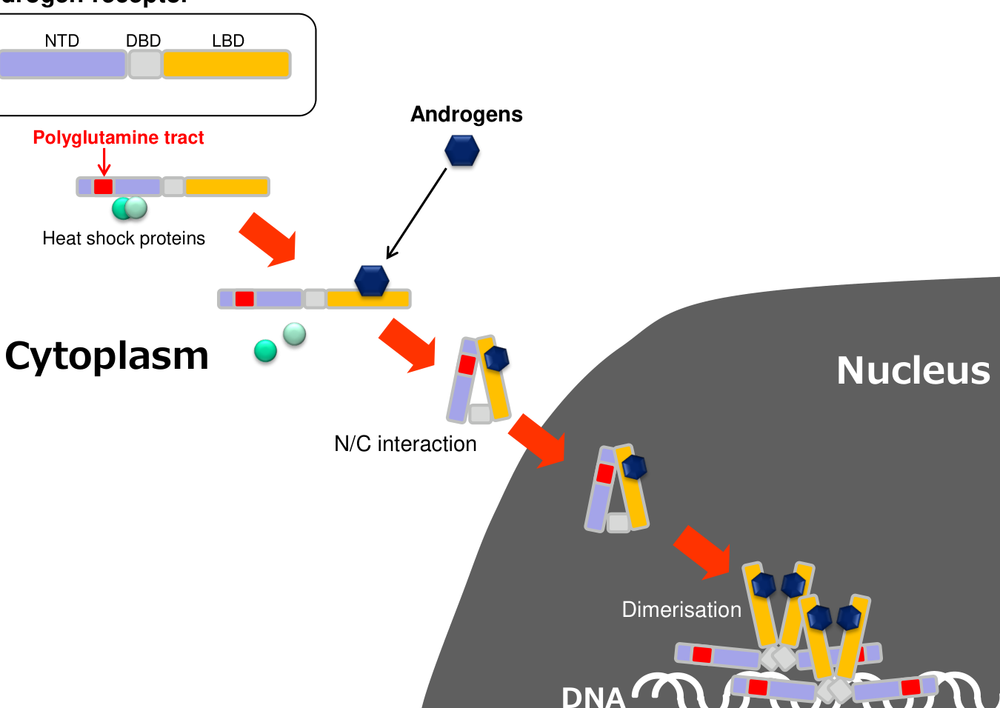

Kennedy disease, also known as spinal and bulbar muscular atrophy (SBMA), is a rare X-linked recessive adult-onset lower motor neuron disease caused by an expanded CAG trinucleotide repeat in exon 1 of the androgen receptor (AR) gene on Xq12. The expansion encodes an abnormally long polyglutamine (polyQ) tract in the androgen receptor protein. In an androgen-dependent, gain-of-function manner the mutant polyQ-AR misfolds, accumulates in the nucleus, and causes progressive degeneration of bulbar and spinal lower motor neurons and primary myopathic changes in skeletal muscle. Affected men present in midlife with slowly progressive proximal limb and bulbar weakness, muscle atrophy, fasciculations, muscle cramps, tremor, and signs of mild androgen insensitivity such as gynecomastia and reduced fertility. Female carriers are usually asymptomatic or only mildly affected.
Ask a research question about Kennedy Disease. OpenScientist will conduct autonomous deep research using the Disorder Mechanisms Knowledge Base and PubMed literature (typically 10-30 minutes).
Do not include personal health information in your question. Questions and results are cached in your browser's local storage.
name: Kennedy Disease
creation_date: "2026-06-03T00:00:00Z"
category: Mendelian
description: >-
Kennedy disease, also known as spinal and bulbar muscular atrophy (SBMA), is a
rare X-linked recessive adult-onset lower motor neuron disease caused by an
expanded CAG trinucleotide repeat in exon 1 of the androgen receptor (AR) gene
on Xq12. The expansion encodes an abnormally long polyglutamine (polyQ) tract
in the androgen receptor protein. In an androgen-dependent, gain-of-function
manner the mutant polyQ-AR misfolds, accumulates in the nucleus, and causes
progressive degeneration of bulbar and spinal lower motor neurons and primary
myopathic changes in skeletal muscle. Affected men present in midlife with
slowly progressive proximal limb and bulbar weakness, muscle atrophy,
fasciculations, muscle cramps, tremor, and signs of mild androgen insensitivity
such as gynecomastia and reduced fertility. Female carriers are usually
asymptomatic or only mildly affected.
disease_term:
preferred_term: Kennedy disease
term:
id: MONDO:0010735
label: Kennedy disease
parents:
- Neurodegenerative Disorders
- Trinucleotide Repeat Disorders
- Motor Neuron Diseases
references:
- reference: PMID:20301508
title: "Spinal and Bulbar Muscular Atrophy."
tags:
- GeneReviews
inheritance:
- name: X-linked recessive
inheritance_term:
preferred_term: X-linked recessive inheritance
term:
id: HP:0001419
label: X-linked recessive inheritance
evidence:
- reference: PMID:20301508
supports: SUPPORT
evidence_source: HUMAN_CLINICAL
snippet: "SBMA is inherited in an X-linked manner."
explanation: >-
The GeneReviews chapter establishes X-linked inheritance for SBMA.
phenotypes:
- name: Proximal muscle weakness
description: >-
Slowly progressive, predominantly proximal limb muscle weakness is a core
feature, typically beginning in midlife in the lower extremities.
phenotype_term:
preferred_term: Muscle weakness
term:
id: HP:0001324
label: Muscle weakness
clinical_course: PROGRESSIVE
evidence:
- reference: PMID:20301508
supports: SUPPORT
evidence_source: HUMAN_CLINICAL
snippet: >-
degeneration of lower motor neurons results in muscle weakness, muscle
atrophy, and fasciculations in affected males.
explanation: >-
GeneReviews lists progressive muscle weakness as a core manifestation of
lower motor neuron degeneration in SBMA.
- name: Bulbar weakness
description: >-
Degeneration of bulbar motor neurons produces dysarthria, dysphagia, and
tongue atrophy with fasciculations.
phenotype_term:
preferred_term: Bulbar signs
term:
id: HP:0002483
label: Bulbar signs
evidence:
- reference: PMID:37360345
supports: SUPPORT
evidence_source: HUMAN_CLINICAL
snippet: >-
characterized by the degeneration of lower motor neurons in the spinal
cord and brainstem and neurogenic atrophy of the skeletal muscle.
explanation: >-
Brainstem (bulbar) lower motor neuron degeneration underlies the bulbar
weakness characteristic of SBMA.
- name: Dysphagia
description: Difficulty swallowing due to bulbar motor neuron involvement.
phenotype_term:
preferred_term: Dysphagia
term:
id: HP:0002015
label: Dysphagia
evidence:
- reference: PMID:20301508
supports: SUPPORT
evidence_source: HUMAN_CLINICAL
snippet: >-
standard treatments for dysarthria and dysphagia
explanation: >-
GeneReviews lists dysphagia among the bulbar manifestations of SBMA
requiring standard management.
- name: Dysarthria
description: Slurred speech from bulbar weakness.
phenotype_term:
preferred_term: Dysarthria
term:
id: HP:0001260
label: Dysarthria
evidence:
- reference: PMID:20301508
supports: SUPPORT
evidence_source: HUMAN_CLINICAL
snippet: >-
standard treatments for dysarthria and dysphagia
explanation: >-
GeneReviews lists dysarthria among the bulbar manifestations of SBMA
requiring standard management.
- name: Tongue atrophy
description: Wasting of the tongue muscles with fasciculations.
phenotype_term:
preferred_term: Tongue atrophy
term:
id: HP:0012473
label: Tongue atrophy
- name: Fasciculations
description: >-
Muscle fasciculations, including characteristic perioral and facial-lingual
fasciculations, reflect lower motor neuron degeneration.
phenotype_term:
preferred_term: Fasciculations
term:
id: HP:0002380
label: Fasciculations
evidence:
- reference: PMID:20301508
supports: SUPPORT
evidence_source: HUMAN_CLINICAL
snippet: >-
degeneration of lower motor neurons results in muscle weakness, muscle
atrophy, and fasciculations in affected males.
explanation: >-
GeneReviews lists fasciculations as a manifestation of lower motor neuron
degeneration in SBMA.
- name: Skeletal muscle atrophy
description: Progressive wasting of skeletal muscle.
phenotype_term:
preferred_term: Skeletal muscle atrophy
term:
id: HP:0003202
label: Skeletal muscle atrophy
evidence:
- reference: PMID:20301508
supports: SUPPORT
evidence_source: HUMAN_CLINICAL
snippet: >-
degeneration of lower motor neurons results in muscle weakness, muscle
atrophy, and fasciculations in affected males.
explanation: >-
GeneReviews lists muscle atrophy as a core manifestation of SBMA.
- name: Postural tremor
description: A high-frequency postural tremor of the hands is common.
phenotype_term:
preferred_term: Postural tremor
term:
id: HP:0002174
label: Postural tremor
evidence:
- reference: PMID:32934110
supports: SUPPORT
evidence_source: HUMAN_CLINICAL
snippet: >-
followed by the emergence of hand tremor, a prodromal sign of the disease.
explanation: >-
Hand tremor is described as a prodromal sign of SBMA, supporting postural
hand tremor as an early phenotype.
- name: Gynecomastia
description: >-
Signs of partial androgen insensitivity caused by reduced androgen receptor
function, including gynecomastia.
phenotype_term:
preferred_term: Gynecomastia
term:
id: HP:0000771
label: Gynecomastia
evidence:
- reference: PMID:20301508
supports: SUPPORT
evidence_source: HUMAN_CLINICAL
snippet: >-
Affected individuals often show gynecomastia, testicular atrophy, and
reduced fertility as a result of mild androgen insensitivity.
explanation: >-
GeneReviews attributes gynecomastia in SBMA to mild androgen
insensitivity from reduced androgen receptor function.
- name: Reduced fertility
description: >-
Mild androgen insensitivity manifests as reduced fertility, oligospermia or
azoospermia, and testicular atrophy.
phenotype_term:
preferred_term: Decreased fertility in males
term:
id: HP:0012041
label: Decreased fertility in males
evidence:
- reference: PMID:20301508
supports: SUPPORT
evidence_source: HUMAN_CLINICAL
snippet: >-
Affected individuals often show gynecomastia, testicular atrophy, and
reduced fertility as a result of mild androgen insensitivity.
explanation: >-
GeneReviews documents reduced fertility and testicular atrophy in SBMA as
consequences of mild androgen insensitivity.
- name: Testicular atrophy
description: >-
Testicular atrophy is a sign of mild androgen insensitivity in SBMA.
phenotype_term:
preferred_term: Testicular atrophy
term:
id: HP:0000029
label: Testicular atrophy
evidence:
- reference: PMID:20301508
supports: SUPPORT
evidence_source: HUMAN_CLINICAL
snippet: >-
Affected individuals often show gynecomastia, testicular atrophy, and
reduced fertility as a result of mild androgen insensitivity.
explanation: >-
GeneReviews lists testicular atrophy as an androgen-insensitivity
manifestation of SBMA.
- name: Elevated creatine kinase
description: Serum creatine kinase is frequently elevated, reflecting myopathy.
phenotype_term:
preferred_term: Elevated circulating creatine kinase concentration
term:
id: HP:0003236
label: Elevated circulating creatine kinase concentration
- name: Sensory neuropathy
description: >-
Subclinical sensory involvement is common, with reduced sensory nerve
action potentials in nearly all patients and distal vibration sensory loss.
phenotype_term:
preferred_term: Sensory neuropathy
term:
id: HP:0000763
label: Sensory neuropathy
evidence:
- reference: PMID:19846582
supports: SUPPORT
evidence_source: HUMAN_CLINICAL
snippet: "Sensory nerve action potentials were reduced in nearly all subjects."
explanation: >-
A 57-patient natural history cohort found reduced sensory nerve action
potentials in nearly all subjects, indicating sensory neuropathy.
- name: Cardiac repolarization abnormalities
description: >-
SBMA patients frequently show abnormal ECGs, including a Brugada pattern and
early repolarization, as well as diffuse myocardial fibrosis, which may
contribute to increased risk of sudden cardiac death.
phenotype_term:
preferred_term: Abnormal EKG
term:
id: HP:0003115
label: Abnormal EKG
evidence:
- reference: PMID:35132468
supports: SUPPORT
evidence_source: HUMAN_CLINICAL
snippet: >-
Abnormal ECGs were recorded in 70%, consisting of a Brugada ECG pattern,
early repolarization or fragmented QRS.
explanation: >-
In a 30-patient SBMA cohort, 70% had abnormal ECGs, supporting cardiac
repolarization abnormalities as a feature of SBMA.
pathophysiology:
- name: Polyglutamine-expanded androgen receptor toxicity
description: >-
CAG repeat expansion in AR exon 1 produces an androgen receptor with an
elongated polyglutamine tract. Upon ligand (testosterone/DHT) binding the
mutant receptor translocates to the nucleus, misfolds, and accumulates,
exerting an androgen-dependent toxic gain of function.
cell_types:
- preferred_term: Lower motor neuron
term:
id: CL:0008039
label: lower motor neuron
biological_processes:
- preferred_term: Androgen receptor signaling pathway
term:
id: GO:0030521
label: androgen receptor signaling pathway
evidence:
- reference: PMID:32934110
supports: SUPPORT
evidence_source: HUMAN_CLINICAL
snippet: >-
Androgen-dependent nuclear accumulation of the polyglutamine-expanded AR
is an essential step in the pathogenesis, providing therapeutic
opportunities via hormonal manipulation and gene silencing with antisense
oligonucleotides.
explanation: >-
Establishes that androgen-dependent nuclear accumulation of the
polyglutamine-expanded androgen receptor is the essential pathogenic step.
- reference: PMID:36746939
supports: SUPPORT
evidence_source: MODEL_ORGANISM
snippet: >-
Androgen binding to polyQ-expanded androgen receptor triggers SBMA
through a combination of toxic gain-of-function and loss-of-function
mechanisms.
explanation: >-
Confirms the combined toxic gain-of-function plus partial
loss-of-function mechanism triggered by androgen binding.
downstream:
- target: Nuclear inclusion formation and impaired proteostasis
causal_link_type: DIRECT
description: >-
Nuclear accumulation of the misfolded polyQ-AR drives formation of nuclear
inclusions and impairs proteostasis.
- target: Skeletal muscle as a primary site of toxicity
causal_link_type: DIRECT
description: >-
Androgen-dependent polyQ-AR toxicity acts directly within skeletal muscle
as an early and primary site of disease.
- target: Motor neuron degeneration
causal_link_type: INDIRECT_KNOWN_INTERMEDIATES
intermediate_mechanisms:
- nuclear inclusion formation and impaired proteostasis
description: >-
PolyQ-AR toxicity ultimately drives degeneration of lower motor neurons
via proteostatic stress and downstream cellular dysfunction.
- name: Nuclear inclusion formation and impaired proteostasis
description: >-
The misfolded polyQ androgen receptor forms nuclear inclusions and impairs
the ubiquitin-proteasome system and protein quality control, contributing to
motor neuron dysfunction.
cell_types:
- preferred_term: Lower motor neuron
term:
id: CL:0008039
label: lower motor neuron
biological_processes:
- preferred_term: Inclusion body assembly
term:
id: GO:0070841
label: inclusion body assembly
- preferred_term: Ubiquitin-dependent protein catabolic process
term:
id: GO:0006511
label: ubiquitin-dependent protein catabolic process
modifier: DECREASED
evidence:
- reference: PMID:32934110
supports: SUPPORT
evidence_source: MODEL_ORGANISM
snippet: >-
Animal studies also suggest that hyperactivation of Src, alteration of
autophagy and a mitochondrial deficit underlie the neuromuscular
degeneration in SBMA and provide alternative therapeutic targets.
explanation: >-
Supports altered autophagy/protein quality control (alongside Src and
mitochondrial deficits) as a downstream mechanism of neuromuscular
degeneration in SBMA.
downstream:
- target: Motor neuron degeneration
causal_link_type: INDIRECT_UNKNOWN_INTERMEDIATES
description: >-
Nuclear inclusions and impaired proteostasis contribute to motor neuron
dysfunction and progressive degeneration.
- name: Skeletal muscle as a primary site of toxicity
description: >-
Beyond lower motor neuron loss, skeletal muscle is directly affected, with
loss of fast-twitch type 2 fibres, increase in slow-twitch type 1 fibres,
and a glycolytic-to-oxidative metabolic switch, indicating muscle is an
early and primary site of androgen-dependent toxicity.
cell_types:
- preferred_term: Skeletal muscle fiber
term:
id: CL:0000188
label: cell of skeletal muscle
biological_processes:
- preferred_term: Skeletal muscle fiber type switching
term:
id: GO:0014883
label: transition between fast and slow fiber
evidence:
- reference: PMID:32934110
supports: SUPPORT
evidence_source: HUMAN_CLINICAL
snippet: >-
pathology of patients and animal models also indicates involvement of
skeletal muscle including loss of fast-twitch type 2 fibres and increased
slow-twitch type 1 fibres, together with a glycolytic-to-oxidative
metabolic switch.
explanation: >-
Documents direct skeletal muscle involvement with fast-to-slow fibre-type
switching and a glycolytic-to-oxidative metabolic shift in SBMA.
downstream:
- target: Disrupted muscle energy metabolism
causal_link_type: DIRECT
description: >-
The glycolytic-to-oxidative fibre-type switch and primary muscle toxicity
drive disrupted NAD+-dependent muscle energy metabolism.
- name: Disrupted muscle energy metabolism
description: >-
SBMA skeletal muscle shows decreased NAD+ and ATP and alterations in
NAD+-dependent energy pathways and the NAD+ salvage pathway, with reduced
nicotinamide riboside kinase 2 (Nmrk2), contributing to impaired muscle
bioenergetics.
cell_types:
- preferred_term: Skeletal muscle fiber
term:
id: CL:0000188
label: cell of skeletal muscle
biological_processes:
- preferred_term: NAD biosynthetic process
term:
id: GO:0009435
label: NAD+ biosynthetic process
modifier: DECREASED
evidence:
- reference: PMID:38452174
supports: SUPPORT
evidence_source: MODEL_ORGANISM
snippet: >-
these data suggest a model in which NAD+ levels are significantly
decreased in muscles of an SBMA mouse model and intransigent to NR
supplementation because of decreased levels of Nmrk2.
explanation: >-
Demonstrates decreased NAD+ and disrupted NAD+ salvage (low Nmrk2) in
SBMA muscle, evidence from a transgenic mouse model.
- name: LSD1/PRMT6 co-regulator amplification of AR toxicity
description: >-
The androgen receptor co-regulators LSD1 and PRMT6 are overexpressed in an
androgen-dependent manner in SBMA skeletal muscle and synergistically
enhance androgen receptor transactivation, an effect amplified by the
expanded polyglutamine tract, identifying a modifier axis of AR toxic gain
of function.
cell_types:
- preferred_term: Skeletal muscle fiber
term:
id: CL:0000188
label: cell of skeletal muscle
biological_processes:
- preferred_term: Androgen receptor signaling pathway
term:
id: GO:0030521
label: androgen receptor signaling pathway
modifier: INCREASED
evidence:
- reference: PMID:36746939
supports: SUPPORT
evidence_source: HUMAN_CLINICAL
snippet: >-
androgen receptor co-regulators lysine-specific demethylase 1 (LSD1) and
protein arginine methyltransferase 6 (PRMT6) are overexpressed in an
androgen-dependent manner specifically in the skeletal muscle of SBMA
patients and mice.
explanation: >-
Identifies LSD1 and PRMT6 as androgen-dependent co-regulators
overexpressed in SBMA muscle that amplify AR transactivation.
- reference: PMID:36746939
supports: SUPPORT
evidence_source: MODEL_ORGANISM
snippet: >-
Pharmacological and genetic silencing of LSD1 and PRMT6 attenuates
polyQ-expanded androgen receptor transactivation in SBMA cells and
suppresses toxicity in SBMA flies, and a preclinical approach based on
miRNA-mediated silencing of LSD1 and PRMT6 attenuates disease
manifestations in SBMA mice.
explanation: >-
Silencing LSD1/PRMT6 reduces AR toxicity in SBMA flies and mice,
supporting their role as modifiers and therapeutic targets.
downstream:
- target: Polyglutamine-expanded androgen receptor toxicity
causal_link_type: DIRECT
description: >-
LSD1 and PRMT6 synergistically enhance androgen receptor transactivation,
amplifying the polyQ-AR toxic gain of function.
- name: Motor neuron degeneration
description: >-
Progressive degeneration and loss of bulbar and spinal lower motor neurons
leads to denervation, muscle weakness, and atrophy.
cell_types:
- preferred_term: Spinal cord motor neuron
term:
id: CL:0011001
label: spinal cord motor neuron
biological_processes:
- preferred_term: Apoptotic process
term:
id: GO:0006915
label: apoptotic process
modifier: INCREASED
evidence:
- reference: PMID:32934110
supports: SUPPORT
evidence_source: HUMAN_CLINICAL
snippet: >-
In the central nervous system, lower motor neurons are selectively
affected
explanation: >-
Establishes selective lower motor neuron involvement in the central
nervous system as the core neurodegenerative feature of SBMA.
genetic:
- name: AR
association: Causative
inheritance:
- name: X-linked recessive
inheritance_term:
preferred_term: X-linked recessive inheritance
term:
id: HP:0001419
label: X-linked recessive inheritance
gene_term:
preferred_term: AR
term:
id: hgnc:644
label: AR
notes: >-
The androgen receptor gene on Xq12. A CAG trinucleotide repeat expansion in
exon 1 beyond ~35 repeats (normal range ~9-36) causes SBMA, encoding an
elongated polyglutamine tract. Repeat length correlates inversely with age of
onset. The mechanism is an androgen-dependent toxic gain of function, distinct
from the loss-of-function mutations in the same gene that cause androgen
insensitivity syndrome.
evidence:
- reference: PMID:20301508
supports: SUPPORT
evidence_source: HUMAN_CLINICAL
snippet: >-
identification of a hemizygous expansion of a CAG trinucleotide repeat
(>35 CAGs) in AR by molecular genetic testing.
explanation: >-
GeneReviews establishes that SBMA is caused by a CAG trinucleotide repeat
expansion (>35 CAGs) in the AR gene.
diagnosis:
- name: Molecular genetic testing
description: >-
The diagnosis is established in a male proband by identifying a hemizygous
expansion of a CAG trinucleotide repeat (>35 CAGs) in the AR gene by
molecular genetic testing.
diagnosis_term:
preferred_term: molecular genetic testing
term:
id: MAXO:0000533
label: molecular genetic testing
qualifiers:
- predicate:
preferred_term: has participant
term:
id: RO:0000057
label: has participant
value:
preferred_term: AR
term:
id: hgnc:644
label: AR
results: >-
A hemizygous CAG trinucleotide repeat expansion (>35 CAGs) in AR confirms
the diagnosis.
evidence:
- reference: PMID:20301508
supports: SUPPORT
evidence_source: HUMAN_CLINICAL
snippet: >-
The diagnosis of SBMA is established in a male proband by the
identification of a hemizygous expansion of a CAG trinucleotide repeat
(>35 CAGs) in AR by molecular genetic testing.
explanation: >-
GeneReviews establishes molecular genetic testing for the AR CAG repeat
expansion as the confirmatory diagnostic test for SBMA.
prevalence:
- population: Italy (nationwide estimate)
percentage: 1.5 per 100,000
notes: >-
Estimated ~1000 affected individuals in Italy at any given time, with an
annual incidence of 0.19 per 100,000 males.
evidence:
- reference: clinicaltrials:NCT06169046
supports: SUPPORT
evidence_source: HUMAN_CLINICAL
snippet: >-
individuals are affected by SBMA in Italy at any given time (prevalence:
1.5/100000) with an annual incidence of 0.19/100000 males.
explanation: >-
An Italian Phase II trial record reports SBMA prevalence of 1.5 per
100,000 and an annual incidence of 0.19 per 100,000 males.
clinical_trials:
- name: NCT00303446
phase: PHASE_II
status: COMPLETED
description: >-
Randomized, placebo-controlled trial of the 5-alpha-reductase inhibitor
dutasteride, which lowers dihydrotestosterone (DHT), to test whether
reducing androgen signaling improves strength and function in SBMA.
evidence:
- reference: clinicaltrials:NCT00303446
supports: SUPPORT
evidence_source: HUMAN_CLINICAL
snippet: >-
Dutasteride decreases DHT production. Lowering DHT levels may decrease the
harmful effects of DHT to the nerves and improve strength in people with
SBMA.
explanation: >-
The dutasteride trial directly tests the androgen-dependence mechanism by
lowering DHT to reduce androgen-driven toxicity in SBMA.
- name: NCT06169046
phase: PHASE_II
status: RECRUITING
description: >-
Multicenter, randomized, double-blind, placebo-controlled trial of the
beta2-agonist clenbuterol targeting skeletal muscle as a therapeutic site
in SBMA.
evidence:
- reference: clinicaltrials:NCT06169046
supports: SUPPORT
evidence_source: HUMAN_CLINICAL
snippet: >-
To establish safety and efficacy of clenbuterol as a cure for SBMA, we
are conducting a multicenter, phase II, randomized, double-blind,
parallel-group, single dose, placebo-controlled trial.
explanation: >-
A Phase II clenbuterol trial evaluates beta2-agonist stimulation of
muscle as a therapeutic strategy, consistent with muscle being a primary
site of SBMA toxicity.
- name: NCT05517603
phase: PHASE_I
status: COMPLETED
description: >-
First-in-patient, randomized, double-blind, placebo-controlled Phase 1/2a
study of AJ201 evaluating safety, tolerability, pharmacokinetics, and
pharmacodynamics in adults with SBMA.
evidence:
- reference: clinicaltrials:NCT05517603
supports: SUPPORT
evidence_source: HUMAN_CLINICAL
snippet: >-
This is a phase 1/2a randomized, double-blind study to evaluate the
safety, tolerability, pharmacokinetics, and pharmacodynamics of study
drug AJ201 in subjects with Spinal and Bulbar Muscular Atrophy (SBMA).
explanation: >-
A Phase 1/2a trial of AJ201 represents an emerging disease-modifying
therapeutic candidate under clinical evaluation for SBMA.
treatments:
- name: Supportive and rehabilitative care
description: >-
No disease-modifying therapy is approved. Management is supportive,
including braces and walkers for ambulation, standard treatments for
dysarthria and dysphagia, breast reduction surgery for gynecomastia as
needed, and psychosocial support. Agents/circumstances to avoid: based on
animal studies, administration of testosterone and its analogs may worsen
motor neuron disease and should be avoided.
treatment_term:
preferred_term: supportive care
term:
id: MAXO:0000950
label: supportive care
evidence:
- reference: PMID:20301508
supports: SUPPORT
evidence_source: MODEL_ORGANISM
snippet: >-
Based on animal studies, administration of testosterone and its analogs
may worsen motor neuron disease.
explanation: >-
GeneReviews flags testosterone and androgen analogs as agents to avoid in
SBMA because animal studies indicate they may worsen motor neuron disease.
- name: Genetic counseling
description: >-
Genetic counseling for the X-linked recessive inheritance pattern, carrier
testing, and reproductive options.
treatment_term:
preferred_term: genetic counseling
term:
id: MAXO:0000079
label: genetic counseling
evidence:
- reference: PMID:20301508
supports: SUPPORT
evidence_source: HUMAN_CLINICAL
snippet: >-
Carrier testing for at-risk female relatives and prenatal testing for a
pregnancy at increased risk are possible if the expanded CAG repeat has
been identified in an affected family member.
explanation: >-
GeneReviews supports genetic counseling, carrier testing, and prenatal
testing for at-risk family members in SBMA.
- name: Antisense oligonucleotide AR-lowering therapy (experimental)
description: >-
Because androgen-dependent toxicity is driven by the toxic AR protein,
lowering AR levels with antisense oligonucleotides is an actively
investigated disease-modifying strategy. ASOs are in development for SBMA;
no AR-targeting ASO is yet approved.
therapeutic_modality: ANTISENSE_OLIGONUCLEOTIDE
aso_details:
aso_mechanism: RNASE_H_KNOCKDOWN
target_gene:
preferred_term: AR
term:
id: hgnc:644
label: AR
target_transcript: AR mRNA
treatment_term:
preferred_term: Pharmacotherapy
term:
id: NCIT:C15986
label: Pharmacotherapy
evidence:
- reference: PMID:32934110
supports: SUPPORT
evidence_source: HUMAN_CLINICAL
snippet: >-
providing therapeutic opportunities via hormonal manipulation and gene
silencing with antisense oligonucleotides.
explanation: >-
Identifies antisense oligonucleotide gene silencing of AR as a rational
therapeutic strategy in SBMA.
- reference: PMID:38732027
supports: SUPPORT
evidence_source: HUMAN_CLINICAL
snippet: >-
ASOs are being developed for the treatment of motor neuron diseases
(MNDs), including spinal muscular atrophy (SMA), amyotrophic lateral
sclerosis (ALS) and spinal and bulbar muscular atrophy (SBMA).
explanation: >-
Confirms that ASOs are under development for SBMA among motor neuron
diseases.
- name: Hormonal (androgen) modulation (investigational)
description: >-
Strategies to reduce androgen action on the mutant receptor (e.g.,
leuprorelin/leuprolide, dutasteride) have been tested. Leuprorelin showed
benefit in dysphagia in Japan but a Phase 3 trial failed to confirm overall
benefit; these remain investigational outside Japan. Note that the
relationship between androgens and muscle is complex, as testosterone levels
correlate positively with muscle strength in patients.
treatment_term:
preferred_term: Pharmacotherapy
term:
id: NCIT:C15986
label: Pharmacotherapy
evidence:
- reference: PMID:19846582
supports: PARTIAL
evidence_source: HUMAN_CLINICAL
snippet: >-
The direct correlation of testosterone levels with muscle strength
indicates that androgens may have a positive effect on muscle function in
spinal and bulbar muscular atrophy patients, in addition to the toxic
effects described in animal models.
explanation: >-
Indicates the androgen-muscle relationship is complex: androgen modulation
may help via reducing toxic gain of function, but testosterone also
correlates positively with muscle strength, complicating hormonal therapy.
Kennedy disease, also called spinal and bulbar muscular atrophy (SBMA), is an adult-onset, slowly progressive, X-linked neuromuscular disorder primarily affecting males and caused by a CAG trinucleotide repeat expansion in the androgen receptor (AR) gene leading to an expanded polyglutamine tract in AR protein, with androgen-dependent toxicity involving both lower motor neurons (spinal cord/brainstem) and skeletal muscle. (chang2024theroleof pages 11-12, cantara2024antisenseoligonucleotides(asos) pages 14-16, prakasam2023lsd1prmt6targetinggenetherapy pages 1-2, hashizume2020diseasemechanismbiomarker pages 1-5)
| Category | Key values |
|---|---|
| Disease name / definition | Kennedy disease; spinal and bulbar muscular atrophy (SBMA); an adult-onset, slowly progressive, X-linked neuromuscular / lower motor neuron disease caused by polyglutamine-expanded androgen receptor, with both motor neuron and skeletal muscle involvement (chang2024theroleof pages 11-12, cantara2024antisenseoligonucleotides(asos) pages 14-16, prakasam2023lsd1prmt6targetinggenetherapy pages 1-2, hashizume2020diseasemechanismbiomarker pages 1-5) |
| Identifiers | MONDO: MONDO_0010735 (OpenTargets disease association for Kennedy disease) (OpenTargets Search: Spinal and bulbar muscular atrophy,Kennedy disease-AR); OMIM: 313200 (reported as “X-linked spinal and bulbar muscular atrophy (SMAX1, Kennedy disease, OMIM 313200)”) (wang2020apathogenicmissense pages 1-2); MeSH: Bulbo-Spinal Atrophy, X-Linked D055534 (ClinicalTrials.gov MeSH mapping) (NCT06411912 chunk 2, NCT06169046 chunk 1, NCT00303446 chunk 3) |
| Synonyms / alternative names | Spinal and bulbar muscular atrophy; SBMA; Kennedy disease / Kennedy’s disease; X-linked spinal and bulbar muscular atrophy; X-linked recessive bulbospinal neuronopathy; progressive proximal spinal and bulbar muscular atrophy of late onset (lee2024morethanautophony pages 1-2, debartolo2024differentiallydisruptedspinal pages 14-15, wang2020apathogenicmissense pages 1-2, cantara2024antisenseoligonucleotides(asos) pages 14-16) |
| Causal gene / locus | Gene: AR (androgen receptor); location: Xq11-12 / Xq12; disease caused by CAG trinucleotide expansion in exon 1 producing an expanded polyglutamine tract in AR protein (cantara2024antisenseoligonucleotides(asos) pages 14-16, prakasam2023lsd1prmt6targetinggenetherapy pages 1-2, lee2024morethanautophony pages 1-2, hashizume2020diseasemechanismbiomarker pages 1-5) |
| Pathogenic repeat ranges / thresholds | Common pathogenic thresholds in evidence: ≥38 CAG in trial eligibility and mechanistic literature (NCT06169046 chunk 1, prakasam2023lsd1prmt6targetinggenetherapy pages 1-2); review evidence gives normal 9–36 CAG vs SBMA 39–72 CAG (cantara2024antisenseoligonucleotides(asos) pages 14-16); AJ201 trial used ≥36 repeats for enrollment (NCT05517603 chunk 1) |
| Inheritance / sex bias | X-linked recessive / sex-linked disorder; primarily affects adult males; females are usually carriers and may be mildly affected; androgen dependence explains marked male predominance (cantara2024antisenseoligonucleotides(asos) pages 14-16, prakasam2023lsd1prmt6targetinggenetherapy pages 1-2, NCT00303446 chunk 1, hashizume2020diseasemechanismbiomarker pages 1-5) |
| Epidemiology | Prevalence estimates in cited sources: 1–2 per 100,000 (review) (cantara2024antisenseoligonucleotides(asos) pages 14-16, hashizume2020diseasemechanismbiomarker pages 1-5); 2–5 per 100,000 worldwide (mechanistic study intro) (prakasam2023lsd1prmt6targetinggenetherapy pages 1-2); Italy trial record: about 1,000 affected individuals, prevalence 1.5/100,000, annual incidence 0.19/100,000 males (NCT06169046 chunk 1) |
| Typical onset / course | Adult onset, often 30–40 years (range 18–64 in one review); slowly progressive; tremor may precede weakness by >10 years; wheelchair often needed 10–15 years after onset in some reports (cantara2024antisenseoligonucleotides(asos) pages 14-16, hashizume2020diseasemechanismbiomarker pages 1-5, iijima2023longtermeffectsof pages 1-2) |
| Hallmark phenotypes | Progressive limb and bulbar weakness/atrophy, fasciculations, cramps, postural hand tremor, dysarthria, dysphagia, laryngospasm, reduced/absent reflexes, distal vibration sensory loss; androgen-insensitivity features including gynecomastia, testicular atrophy, erectile dysfunction, infertility/decreased fertility; aspiration pneumonia is a major cause of death (lee2024morethanautophony pages 1-2, hashizume2020diseasemechanismbiomarker pages 1-5, rhodes2009clinicalfeaturesof pages 6-8) |
| Quality-of-life / functional impact | ADL domains notably affected: walking, handwriting, falling, swallowing, speech; SF-36v2 physical component mean 34.3 ± 11.0 in a landmark cohort; substantial diagnostic delay (~2 years to first medical attention plus ~3 more years to diagnosis) (rhodes2009clinicalfeaturesof pages 6-8) |
| Key diagnostic tests | Genetic confirmation of AR CAG expansion is definitive; supportive tests include EMG/neurophysiology, quantitative muscle assessment, timed walk tests, SBMAFRS/ALSFRS-R, tongue pressure, pulmonary metrics (%FVC, %PEF), muscle MRI with Dixon fat quantification, and cardiac ECG/CMR when indicated (NCT06169046 chunk 1, NCT00303446 chunk 1, inagaki2022developmentofa pages 6-7, hashizume2020diseasemechanismbiomarker pages 5-8, steinmetz2022jwavesyndromes pages 1-2) |
| Biomarkers / outcome measures | Prominent biomarkers: serum creatinine (declines before overt weakness), CK/liver enzymes, MRI muscle fat fraction, MUNE, tongue pressure; trial/research outcomes include 6MWT, 2MWD, AMAT, QMA, SBMAFRS, ALSFRS-R, %FVC, %PEF, neurophysiology, and mutant AR in muscle/skin (NCT05517603 chunk 1, NCT06169046 chunk 1, NCT00303446 chunk 1, inagaki2022developmentofa pages 6-7, hashizume2020diseasemechanismbiomarker pages 1-5, hashizume2020diseasemechanismbiomarker pages 5-8) |
| Notable recent mechanism (2023) | LSD1/PRMT6 axis: androgen-dependent overexpression of AR co-regulators LSD1 and PRMT6 specifically in SBMA skeletal muscle; they synergistically enhance AR transactivation, and silencing them suppresses toxic gain-of-function and improves phenotypes in flies and mice (prakasam2023lsd1prmt6targetinggenetherapy pages 1-2, prakasam2023lsd1prmt6targetinggenetherapy pages 9-12, prakasam2023lsd1prmt6targetinggenetherapy pages 14-15) |
| Notable recent mechanism (2023) | Early skeletal-muscle pathology: defective excitation-contraction coupling and impaired mitochondrial respiration occur before denervation; early events are androgen-dependent and reversible with castration or AR silencing; patient biopsies and mouse models support muscle as a primary toxicity site (hashizume2020diseasemechanismbiomarker pages 8-12, hashizume2020diseasemechanismbiomarker pages 12-15) |
| Notable recent mechanism (2024) | Energy metabolism / NAD+ biology: SBMA muscle shows reduced NAD+ and ATP, altered nicotinamide/NAD+ salvage pathways, and decreased Nmrk2/NRK2, helping explain why nicotinamide riboside failed to restore muscle NAD+ or improve disease in mice; integrated metabolomics/proteomics implicated glycolysis, PPP, pyruvate, glutathione, and amino-acid pathways (debartolo2024differentiallydisruptedspinal pages 10-12, debartolo2024differentiallydisruptedspinal pages 1-2, debartolo2024differentiallydisruptedspinal pages 8-10) |
| Notable recent mechanism (2024 preclinical) | Synaptic dysregulation / hyperexcitability: early postnatal nuclear accumulation of polyQ-AR in motor neurons dysregulates glutamatergic synaptic genes via Rest/Rest4; iPSC-derived motor neurons are hyperexcitable; antisense correction rescued pathology in mice (preprint evidence) (prakasam2023lsd1prmt6targetinggenetherapy pages 9-12) |
| Anatomy / cell types chiefly affected | Lower motor neurons in spinal cord and brainstem; skeletal muscle is a major primary toxicity site; neuromuscular junction and muscle fiber-type composition are altered; cardiac involvement may occur in a subset (ECG/CMR abnormalities, fibrosis) (hashizume2020diseasemechanismbiomarker pages 1-5, steinmetz2022jwavesyndromes pages 1-2, hashizume2020diseasemechanismbiomarker pages 8-12, hashizume2020diseasemechanismbiomarker pages 12-15) |
| Cardiac / systemic comorbidity signals | In a 30-patient SBMA cohort, 70% had abnormal ECGs; diffuse myocardial fibrosis on T1 mapping in 73.9% vs 9.1% of controls; metabolic comorbidities include glucose intolerance/insulin resistance and dyslipidemia in some patients (debartolo2024differentiallydisruptedspinal pages 1-2, steinmetz2022jwavesyndromes pages 1-2, hashizume2020diseasemechanismbiomarker pages 1-5) |
| Supportive / real-world implementation | Long-term gait rehabilitation using wearable HAL in one 68-year-old patient: 9 courses over ~5 years, 3 sessions/week for 3 weeks each; 2MWD improved from 94 m to 101.8 m, gait item on ALSFRS-R remained stable at 3, and independent walking was maintained (iijima2023longtermeffectsof pages 1-2, iijima2023longtermeffectsof pages 9-10, iijima2023longtermeffectsof pages 2-4) |
| Historical / completed interventional trials | NCT00303446 dutasteride 0.5 mg/day vs placebo for 24 months, phase 2; primary endpoint QMA; failed primary outcome in review summary (NCT00303446 chunk 1, hashizume2020diseasemechanismbiomarker pages 5-8). NCT00004771 leuprolide + testosterone, phase 2; genotype-confirmed by AR exon-1 mutation (NCT00004771 chunk 1). NCT00851461 goserelin (listed as completed) (clinical-trial search context in conversation). NCT02024932 BVS857 / IGF-1 mimetic, phase 2, showed muscle-volume signal in review summary (hashizume2020diseasemechanismbiomarker pages 5-8) |
| Active / recent trials (2023-2025 records) | NCT06169046 clenbuterol 0.04 mg/day for 48 weeks, phase 2, primary endpoint 6MWT, enrollment 90, requires AR CAG ≥38 (NCT06169046 chunk 1); NCT05517603 AJ201 600 mg/day for 12 weeks, phase 1/2a, enrollment 25, pharmacodynamic endpoint mutant AR in skeletal muscle, requires AR CAG ≥36 (NCT05517603 chunk 1); NCT06411912 NIDO-361 in genetically confirmed SBMA, phase 2, enrollment 54 (NCT06411912 chunk 2); NCT06862596 mexiletine hydrochloride phase 2/3 recruiting (clinical-trial search context in conversation) |
| Expert/consensus interpretation | Current expert view is that SBMA combines androgen-dependent toxic gain-of-function of expanded AR with elements of partial AR loss-of-function; skeletal muscle is not merely secondary but a therapeutically relevant primary target, supporting both endocrine modulation and AR-lowering / co-regulator-targeting strategies (prakasam2023lsd1prmt6targetinggenetherapy pages 1-2, hashizume2020diseasemechanismbiomarker pages 12-15, hashizume2020diseasemechanismbiomarker pages 1-5) |
Table: This table condenses the main evidence-backed facts about Kennedy disease / SBMA, including identifiers, genetics, epidemiology, phenotypes, biomarkers, mechanisms, and clinical trials. It is designed as a quick-reference summary for knowledge-base curation or report drafting.
SBMA is described as a hereditary neuromuscular disorder caused by CAG trinucleotide expansion in the gene encoding the androgen receptor (AR), with selective involvement of lower motor neurons and clear skeletal muscle pathology. (hashizume2020diseasemechanismbiomarker pages 1-5)
Recent review wording (abstract quote): “Spinal and bulbar muscular atrophy (SBMA) is a hereditary neuromuscular disorder caused by CAG trinucleotide expansion in the gene encoding the androgen receptor (AR).” (Hashizume et al., 2020-09; JNNP; https://doi.org/10.1136/jnnp-2020-322949) (hashizume2020diseasemechanismbiomarker pages 1-5)
A 2024 review similarly defines it as “an X-linked neuromuscular disorder characterized by the progressive loss of motor neurons in the spinal cord and brainstem.” (Chang & Chen, 2024-05; Antioxidants; https://doi.org/10.3390/antiox13060649) (chang2024theroleof pages 11-12)
Not found in retrieved full text: Orphanet identifier and ICD-10/ICD-11 codes were not explicitly present in the gathered sources, so they cannot be cited from this tool run. (wang2020apathogenicmissense pages 1-2, NCT06169046 chunk 1)
Common synonyms in the retrieved literature include Kennedy disease/Kennedy’s disease, spinal and bulbar muscular atrophy (SBMA), X-linked spinal and bulbar muscular atrophy, and “X-linked recessive bulbospinal neuronopathy.” (lee2024morethanautophony pages 1-2, debartolo2024differentiallydisruptedspinal pages 14-15, wang2020apathogenicmissense pages 1-2, cantara2024antisenseoligonucleotides(asos) pages 14-16)
The evidence used here is predominantly aggregated disease-level resources (reviews, clinical trial registries) plus human clinical cohorts/case reports and model organism + in vitro research, rather than EHR-derived analyses. (rhodes2009clinicalfeaturesof pages 6-8, hashizume2020diseasemechanismbiomarker pages 1-5, NCT06169046 chunk 1)
Primary cause (genetic): CAG repeat expansion in AR exon 1 producing polyglutamine-expanded AR. (cantara2024antisenseoligonucleotides(asos) pages 14-16, prakasam2023lsd1prmt6targetinggenetherapy pages 1-2, hashizume2020diseasemechanismbiomarker pages 1-5)
A landmark clinical cohort explicitly frames the disease as a “ligand-dependent toxic gain of function in the mutant androgen receptor,” linking causality to androgen binding. (Rhodes et al., 2009-10; Brain; https://doi.org/10.1093/brain/awp258) (rhodes2009clinicalfeaturesof pages 2-3)
Mechanistic protective interventions (preclinical): androgen deprivation and AR silencing are repeatedly reported to prevent or reverse early pathological processes in SBMA models. (debartolo2024differentiallydisruptedspinal pages 16-17, hashizume2020diseasemechanismbiomarker pages 19-25)
A 2024 metabolomics/proteomics study directly tested NAD+ precursor supplementation (nicotinamide riboside) and found no benefit for muscle NAD+/ATP or disease progression in a transgenic SBMA mouse model, indicating that NAD+ precursor supplementation via NR is not protective in that model context. (DeBartolo et al., 2024-03; JCI Insight; https://doi.org/10.1172/jci.insight.178048) (debartolo2024differentiallydisruptedspinal pages 1-2, debartolo2024differentiallydisruptedspinal pages 8-10)
The clearest “environmental” interaction is hormonal (androgen) exposure interacting with the expanded AR allele to drive disease: ligand binding triggers nuclear translocation/accumulation and downstream toxicity. (prakasam2023lsd1prmt6targetinggenetherapy pages 1-2, hashizume2020diseasemechanismbiomarker pages 8-12)
Commonly reported clinical features include progressive limb and bulbar weakness and atrophy, cramps, fasciculations (including facial/tongue), tremor, dysarthria, dysphagia, laryngospasm, reduced/absent reflexes, and distal sensory loss (often vibration). (hashizume2020diseasemechanismbiomarker pages 1-5, rhodes2009clinicalfeaturesof pages 6-8, lee2024morethanautophony pages 1-2)
A detailed review section states that postural hand tremor can occur “more than ten years before the onset of muscle weakness.” (hashizume2020diseasemechanismbiomarker pages 1-5)
Suggested HPO terms (non-exhaustive): * Muscle weakness (HP:0001324) * Muscle atrophy (HP:0003202) * Fasciculations (HP:0002380) * Muscle cramps (HP:0003394) * Dysarthria (HP:0001260) * Dysphagia (HP:0002015) * Tremor (HP:0001337) * Hyporeflexia/Areflexia (HP:0001265) * Gynecomastia (HP:0000768) * Erectile dysfunction (HP:0100639) * Male infertility (HP:0000027)
(hashizume2020diseasemechanismbiomarker pages 1-5, rhodes2009clinicalfeaturesof pages 6-8, lee2024morethanautophony pages 1-2)
Androgen insensitivity manifestations in SBMA include gynecomastia, testicular atrophy, erectile dysfunction, and decreased fertility. (hashizume2020diseasemechanismbiomarker pages 1-5)
A 2024 review reports typical onset “around 30–40 years of age, with a range of 18–64 years.” (cantara2024antisenseoligonucleotides(asos) pages 14-16)
In a landmark clinical characterization study, self-reported impairment was greatest for walking/handwriting/falling/swallowing/speech, and quality of life was reduced with an SF-36v2 physical component summary mean of 34.3 (SD 11.0). (rhodes2009clinicalfeaturesof pages 6-8)
The same cohort reported substantial diagnostic delay (~2 years from symptom onset to first medical attention and ~3 more years to clinical diagnosis). (rhodes2009clinicalfeaturesof pages 6-8)
AR (androgen receptor) is the causal gene for SBMA/Kennedy disease in all retrieved mechanistic and clinical sources. (cantara2024antisenseoligonucleotides(asos) pages 14-16, prakasam2023lsd1prmt6targetinggenetherapy pages 1-2, hashizume2020diseasemechanismbiomarker pages 1-5)
Ontology suggestion: HGNC:644 (AR) (gene symbol supported by evidence; HGNC ID not present in retrieved text and is provided here as a conventional mapping without direct citation).
SBMA is caused by an expansion of a polymorphic tandem CAG repeat in the AR coding region; in one review, healthy range is 9–36 and SBMA range 39–72 with repeat length correlating with age of onset and severity. (cantara2024antisenseoligonucleotides(asos) pages 14-16)
Clinical trial inclusion criteria operationalize this as AR CAG repeat number ≥38 for genetic confirmation in an ongoing Phase 2 clenbuterol trial. (NCT06169046 chunk 1)
Current expert synthesis supports combined toxic gain-of-function (androgen-dependent nuclear accumulation/aggregation and transcriptional dysregulation) plus partial loss-of-function manifested as androgen insensitivity. (prakasam2023lsd1prmt6targetinggenetherapy pages 1-2, hashizume2020diseasemechanismbiomarker pages 1-5, hashizume2020diseasemechanismbiomarker pages 8-12)
A 2023 Nature Communications study highlights AR co-regulators LSD1 and PRMT6 as androgen-dependently overexpressed in SBMA skeletal muscle, synergistically enhancing AR transactivation (with amplification by expanded polyQ), and shows that silencing these co-regulators ameliorates SBMA phenotypes in flies and mice. (Prakasam et al., 2023-02; https://doi.org/10.1038/s41467-023-36186-9) (prakasam2023lsd1prmt6targetinggenetherapy pages 1-2, prakasam2023lsd1prmt6targetinggenetherapy pages 9-12)
Abstract quote: “Spinobulbar muscular atrophy (SBMA) is caused by CAG expansions in the androgen receptor gene.” (prakasam2023lsd1prmt6targetinggenetherapy pages 1-2)
A mechanistic review notes downstream “epigenetic dysregulation” (including histone and DNA methylation-related changes) as part of the nuclear toxic cascade after ligand-dependent nuclear entry and aggregation. (hashizume2020diseasemechanismbiomarker pages 19-25, hashizume2020diseasemechanismbiomarker pages 8-12)
No infectious etiology is implicated in SBMA in the retrieved evidence. (hashizume2020diseasemechanismbiomarker pages 1-5)
Non-genetic environmental contributors are not well-defined in the retrieved texts; the most actionable non-genetic factor is hormonal milieu (androgen signaling), which is mechanistically required for toxicity and therefore constitutes a biologically grounded exposure factor rather than an external toxin or pathogen. (hashizume2020diseasemechanismbiomarker pages 8-12)
A consensus mechanistic chain supported across review and primary research is: 1) AR CAG expansion → polyQ-expanded AR (genetic trigger). (hashizume2020diseasemechanismbiomarker pages 1-5, prakasam2023lsd1prmt6targetinggenetherapy pages 1-2) 2) Androgen binding (testosterone/DHT) triggers N/C interaction, dissociation from chaperones, and nuclear translocation/accumulation, described as “an essential step in the pathogenesis.” (hashizume2020diseasemechanismbiomarker pages 1-5, hashizume2020diseasemechanismbiomarker pages 8-12) 3) In nucleus and cytoplasm, mutant AR undergoes aggregation/inclusion formation and aberrant transcriptional/co-regulator interactions, driving toxic gain-of-function. (hashizume2020diseasemechanismbiomarker pages 19-25, hashizume2020diseasemechanismbiomarker pages 8-12) 4) Downstream dysfunction includes: * Proteostasis and autophagy impairment, with impaired autophagic flux (LC3/p62 accumulation) supporting accumulation of insoluble AR species. (hashizume2020diseasemechanismbiomarker pages 12-15) * Akt/mTOR signaling hyperactivation in muscle (described as compensatory in one review) coupled to fiber-type and metabolic switching. (hashizume2020diseasemechanismbiomarker pages 12-15) * Mitochondrial deficits (mitochondrial depolarization, altered oxidative phosphorylation proteins, mitophagy) and excitation–contraction coupling / Ca2+ dysregulation, linking molecular pathology to reduced muscle contractility. (hashizume2020diseasemechanismbiomarker pages 12-15, hashizume2020diseasemechanismbiomarker pages 19-25) 5) Tissue-level pathology manifests in lower motor neurons (spinal cord/brainstem) and skeletal muscle, with growing evidence that muscle can be an early and primary site of toxicity. (hashizume2020diseasemechanismbiomarker pages 1-5, hashizume2020diseasemechanismbiomarker pages 12-15)
A 2024 JCI Insight study integrated metabolomics and proteomics in SBMA mouse quadriceps and reported decreased NAD+ and ATP in muscle but not spinal cord, with joint pathway analysis implicating nicotinamide metabolism and NAD+-dependent pathways (pentose phosphate, pyruvate, glutathione, amino acid metabolism). (debartolo2024differentiallydisruptedspinal pages 8-10)
This study also identified decreased Nmrk2/NRK2 as a likely bottleneck explaining why nicotinamide riboside supplementation failed to restore muscle NAD+ or modify progression in vivo. (debartolo2024differentiallydisruptedspinal pages 1-2, debartolo2024differentiallydisruptedspinal pages 8-10)
A compact schematic of androgen-dependent nuclear translocation and downstream SBMA pathogenic mechanisms is provided as a figure in Hashizume et al. 2020. (hashizume2020diseasemechanismbiomarker media 00f97023)
GO Biological Process (suggested): * Androgen receptor signaling pathway * Protein aggregation * Autophagy * Mitochondrial dysfunction / oxidative phosphorylation * Regulation of mTOR signaling * Regulation of cytosolic calcium ion concentration / excitation–contraction coupling
(hashizume2020diseasemechanismbiomarker pages 12-15, hashizume2020diseasemechanismbiomarker pages 19-25, debartolo2024differentiallydisruptedspinal pages 8-10)
CL Cell types (suggested): * Spinal cord motor neuron (lower motor neuron) * Skeletal muscle fiber cell (myofiber)
(hashizume2020diseasemechanismbiomarker pages 1-5, hashizume2020diseasemechanismbiomarker pages 12-15)
Cardiac structural and electrophysiologic abnormalities have been reported in SBMA cohorts, motivating screening in some patients. (steinmetz2022jwavesyndromes pages 1-2)
(steinmetz2022jwavesyndromes pages 1-2, hashizume2020diseasemechanismbiomarker pages 1-5)
SBMA is adult-onset with typical onset described in the 30–60 year range in a rehabilitation case report and review sources. (iijima2023longtermeffectsof pages 1-2, cantara2024antisenseoligonucleotides(asos) pages 14-16)
It is slowly progressive and can lead to major mobility impairment over years to decades; aspiration pneumonia is emphasized as a major cause of death in clinical reviews. (hashizume2020diseasemechanismbiomarker pages 1-5)
SBMA is X-linked (sex-linked) and predominantly manifests in adult males; females are generally carriers with milder or absent manifestations. (cantara2024antisenseoligonucleotides(asos) pages 14-16, hashizume2020diseasemechanismbiomarker pages 1-5)
Prevalence estimates vary by source: * 1–2 per 100,000 in a clinical review. (hashizume2020diseasemechanismbiomarker pages 1-5) * 2–5 per 100,000 worldwide in a 2023 mechanistic study introduction. (prakasam2023lsd1prmt6targetinggenetherapy pages 1-2) * Italy-specific estimate from a 2024 trial record: “prevalence: 1.5/100000” and “annual incidence of 0.19/100000 males.” (NCT06169046 chunk 1)
Beyond confirmatory genetic testing, commonly used quantitative measures include quantitative muscle assessment (QMA), timed walk tests (2-minute, 6-minute), AMAT, SBMAFRS, pulmonary function (%FVC/%PEF), tongue pressure, neurophysiology measures (including motor unit number estimation), and skeletal muscle MRI (fat quantification). (hashizume2020diseasemechanismbiomarker pages 5-8, rhodes2009clinicalfeaturesof pages 2-3, inagaki2022developmentofa pages 6-7)
A 2022 methods paper developed a composite (SBMAFC) combining tongue pressure, grip power, %PEF, timed walking, and %FVC to create a more sensitive outcome measure; it enrolled 97 genetically confirmed SBMA patients and 36 controls. (Inagaki et al., 2022-10; Scientific Reports; https://doi.org/10.1038/s41598-022-22322-w) (inagaki2022developmentofa pages 6-7)
Serum creatinine is repeatedly highlighted as a promising progression biomarker that begins declining before overt weakness, and MRI-based muscle/fat evaluation is noted as useful for tracking progression. (hashizume2020diseasemechanismbiomarker pages 1-5)
A 2022 cohort study (30 SBMA vs 11 controls) reported abnormal ECGs in 70% of SBMA and diffuse myocardial fibrosis by T1 mapping in 73.9% vs 9.1% of controls, supporting ECG screening and consideration of CMR in cardiac risk assessment. (Steinmetz et al., 2022-02; J Neurol; https://doi.org/10.1007/s00415-022-10992-5) (steinmetz2022jwavesyndromes pages 1-2)
Definitive diagnosis is via repeat expansion testing of AR CAG repeat length, with thresholds operationalized in trials (e.g., ≥38) and reviewed pathogenic ranges (39–72). (NCT06169046 chunk 1, cantara2024antisenseoligonucleotides(asos) pages 14-16)
SBMA is chronic and slowly progressive with meaningful disability; a key morbidity driver is progressive bulbar dysfunction leading to aspiration pneumonia. (hashizume2020diseasemechanismbiomarker pages 1-5)
Quantitative functional impacts include reduced SF-36 physical component score (34.3 ± 11.0) in a landmark cohort and significant ADL impacts on walking and bulbar function. (rhodes2009clinicalfeaturesof pages 6-8)
No curative therapy is established; supportive management uses symptomatic approaches and structured monitoring/outcome measures (strength, function, respiration, swallowing, imaging/biomarkers). (hashizume2020diseasemechanismbiomarker pages 5-8, hashizume2020diseasemechanismbiomarker pages 1-5)
Dutasteride (5α-reductase inhibitor; reduces DHT): A Phase 2, randomized, placebo-controlled trial used dutasteride 0.5 mg/day for 24 months with QMA as primary endpoint and multiple secondary outcomes (AMAT, 2-min walk, SF-36v2, neurophysiology, CK, hormone levels). (ClinicalTrials.gov NCT00303446; first posted 2006; https://clinicaltrials.gov/study/NCT00303446) (NCT00303446 chunk 1)
Leuprolide + testosterone (hormonal suppression/replacement strategy): A Phase 2 trial aimed to “Evaluate the effects of androgen suppression with leuprolide and androgen replacement with testosterone enanthate on muscle strength.” (ClinicalTrials.gov NCT00004771; first posted 1992; https://clinicaltrials.gov/study/NCT00004771) (NCT00004771 chunk 1)
A mechanistic/clinical review summarizes that a Phase 3 trial of leuprorelin (n=204) “failed to confirm benefit” after earlier Phase 2 signals. (hashizume2020diseasemechanismbiomarker pages 5-8)
BVS857 (IGF-1 mimetic): A completed Phase 2 randomized study evaluated safety/tolerability and change in thigh muscle volume (MRI), with functional endpoints (AMAT) and DXA lean mass; results were posted on ClinicalTrials.gov (results first posted 2017-08-11). (ClinicalTrials.gov NCT02024932; https://clinicaltrials.gov/study/NCT02024932) (NCT02024932 chunk 1)
AJ201: A completed Phase 1/2a randomized placebo-controlled trial evaluated safety and pharmacodynamics, including change from baseline in mutant AR protein levels in skeletal muscle, enrolling adult males with confirmed AR expansion (≥36 repeats). (ClinicalTrials.gov NCT05517603; https://clinicaltrials.gov/study/NCT05517603) (NCT05517603 chunk 1)
NIDO-361: A Phase 2 record includes endpoints such as accelerometer-based free-living physical activity and grip strength (HHD) in ambulatory genetically confirmed males. (ClinicalTrials.gov NCT06411912; https://clinicaltrials.gov/study/NCT06411912) (NCT06411912 chunk 2)
Clenbuterol (β2-agonist): A recruiting Phase 2 multicenter RCT uses 0.04 mg/day for 48 weeks with primary endpoint 6MWT and multiple secondary outcomes including SBMA-FRS, AMAT, FVC, serum creatinine, and quality-of-life scales; eligibility includes AR CAG ≥38. (ClinicalTrials.gov NCT06169046; posted 2024; https://clinicaltrials.gov/study/NCT06169046) (NCT06169046 chunk 1)
ASO-based AR lowering is repeatedly described as a rational disease-modifying direction because androgen-dependent toxicity is driven by the toxic AR protein; a review states: “Probably the best therapeutic approach for SBMA is reducing levels of the toxic AR protein” and highlights preclinical ASO benefit. (hashizume2020diseasemechanismbiomarker pages 12-15)
Suggested MAXO terms (non-exhaustive): * Androgen deprivation therapy * Antisense oligonucleotide therapy * Physical therapy / gait training * Assistive device therapy (exoskeleton-assisted gait training)
(NCT06169046 chunk 1, NCT00303446 chunk 1, hashizume2020diseasemechanismbiomarker pages 12-15, iijima2023longtermeffectsof pages 1-2)
No primary prevention is established for SBMA; key preventive strategies are genetic counseling, carrier detection in families, and anticipatory guidance for complications (swallowing/respiratory risk, fall risk, cardiac screening where appropriate). The retrieved evidence supports downstream complication prevention (e.g., aspiration pneumonia as major cause of death) but does not provide formal prevention guidelines. (hashizume2020diseasemechanismbiomarker pages 1-5)
No naturally occurring SBMA orthologous disease in non-human species (OMIA/veterinary) was identified in the retrieved evidence for this run. (hashizume2020diseasemechanismbiomarker pages 8-12, prakasam2023lsd1prmt6targetinggenetherapy pages 9-12)
Multiple SBMA mouse models are described across mechanistic and therapeutic studies, including AR-97Q, AR100Q, AR112Q/AR113Q, and BAC fxAR121, which recapitulate androgen dependence, AR aggregation, neuromuscular weakness, fiber-type/metabolic switching, and signaling/metabolic abnormalities. (hashizume2020diseasemechanismbiomarker pages 8-12, prakasam2023lsd1prmt6targetinggenetherapy pages 9-12, cantara2024antisenseoligonucleotides(asos) pages 14-16, debartolo2024differentiallydisruptedspinal pages 8-10)
A Drosophila model expressing human polyQ-expanded AR (e.g., AR52Q) is used to score toxicity phenotypes such as eye degeneration and to test genetic suppressors/therapeutics. (prakasam2023lsd1prmt6targetinggenetherapy pages 14-15)
Human patient muscle biopsies are directly used to confirm muscle pathology and molecular changes, and multiple cell models (HEK293T, MN1, LNCaP) are used to measure AR transactivation and toxicity modulation. (prakasam2023lsd1prmt6targetinggenetherapy pages 9-12, prakasam2023lsd1prmt6targetinggenetherapy pages 14-15)
A key translational limitation highlighted in ASO work is CNS accessibility: some gapmers do not cross the blood–brain barrier, producing peripheral but not spinal cord AR knockdown unless delivered intracerebroventricularly. (cantara2024antisenseoligonucleotides(asos) pages 14-16)
A notable real-world implementation is long-term rehabilitation using a wearable cyborg Hybrid Assistive Limb (HAL). In a 5-year follow-up case report (published 2023-06-08), the patient completed nine multi-week courses and improved 2MWD from 94 m to 101.8 m while maintaining ALSFRS-R gait item stability (score 3), suggesting sustained functional maintenance despite progressive disease. (Iijima et al., 2023; Frontiers in Neurology; https://doi.org/10.3389/fneur.2023.1143820) (iijima2023longtermeffectsof pages 1-2)
Abstract quote: “2MWD improved from 94 m to 101.8 m, and the ALSFRS-R gait items remained unchanged (score 3) for approximately 5 years.” (iijima2023longtermeffectsof pages 1-2)
Where possible, primary literature should be referenced by PMID. In this tool run, the retrieved full-text snippets did not consistently include PMID metadata; therefore, this report provides DOI URLs and publication dates from the retrieved sources and clinical trial registry URLs/identifiers. (hashizume2020diseasemechanismbiomarker pages 1-5, prakasam2023lsd1prmt6targetinggenetherapy pages 1-2, NCT06169046 chunk 1)
References
(chang2024theroleof pages 11-12): Kuo-Hsuan Chang and Chiung-Mei Chen. The role of nrf2 in trinucleotide repeat expansion disorders. Antioxidants, 13:649, May 2024. URL: https://doi.org/10.3390/antiox13060649, doi:10.3390/antiox13060649. This article has 6 citations.
(cantara2024antisenseoligonucleotides(asos) pages 14-16): Silvia Cantara, Giorgia Simoncelli, and Claudia Ricci. Antisense oligonucleotides (asos) in motor neuron diseases: a road to cure in light and shade. International Journal of Molecular Sciences, Apr 2024. URL: https://doi.org/10.3390/ijms25094809, doi:10.3390/ijms25094809. This article has 46 citations.
(prakasam2023lsd1prmt6targetinggenetherapy pages 1-2): Ramachandran Prakasam, Angela Bonadiman, Roberta Andreotti, Emanuela Zuccaro, Davide Dalfovo, Caterina Marchioretti, Debasmita Tripathy, Gianluca Petris, Eric N. Anderson, Alice Migazzi, Laura Tosatto, Anna Cereseto, Elena Battaglioli, Gianni Sorarù, Wooi Fang Lim, Carlo Rinaldi, Fabio Sambataro, Naemeh Pourshafie, Christopher Grunseich, Alessandro Romanel, Udai Bhan Pandey, Andrea Contestabile, Giuseppe Ronzitti, Manuela Basso, and Maria Pennuto. Lsd1/prmt6-targeting gene therapy to attenuate androgen receptor toxic gain-of-function ameliorates spinobulbar muscular atrophy phenotypes in flies and mice. Nature Communications, Feb 2023. URL: https://doi.org/10.1038/s41467-023-36186-9, doi:10.1038/s41467-023-36186-9. This article has 27 citations and is from a highest quality peer-reviewed journal.
(hashizume2020diseasemechanismbiomarker pages 1-5): Atsushi Hashizume, Kenneth H Fischbeck, Maria Pennuto, Pietro Fratta, and Masahisa Katsuno. Disease mechanism, biomarker and therapeutics for spinal and bulbar muscular atrophy (sbma). Journal of Neurology, Neurosurgery & Psychiatry, 91:1085-1091, Sep 2020. URL: https://doi.org/10.1136/jnnp-2020-322949, doi:10.1136/jnnp-2020-322949. This article has 69 citations.
(OpenTargets Search: Spinal and bulbar muscular atrophy,Kennedy disease-AR): Open Targets Query (Spinal and bulbar muscular atrophy,Kennedy disease-AR, 7 results). Buniello, A. et al. (2025). Open Targets Platform: facilitating therapeutic hypotheses building in drug discovery. Nucleic Acids Research.
(wang2020apathogenicmissense pages 1-2): Xin Hua Wang, Lin Mei Zhang, Xue Yang, and Shui Zhen Zhou. A pathogenic missense variant (c.1617g>a, p.met539ile) in uba1 causing infantile x-linked spinal muscular atrophy (smax2). Frontiers in Pediatrics, Feb 2020. URL: https://doi.org/10.3389/fped.2020.00064, doi:10.3389/fped.2020.00064. This article has 12 citations.
(NCT06411912 chunk 2): A Study of NIDO-361 in Patients With SBMA. Nido Biosciences, Inc.. 2024. ClinicalTrials.gov Identifier: NCT06411912
(NCT06169046 chunk 1): Gianni Soraru. A Placebo-controlled Study of Clenbuterol in Spinal and Bulbar Muscular Atrophy. Gianni Soraru. 2024. ClinicalTrials.gov Identifier: NCT06169046
(NCT00303446 chunk 3): Dutasteride to Treat Spinal and Bulbar Muscular Atrophy (SBMA). National Institute of Neurological Disorders and Stroke (NINDS). 2006. ClinicalTrials.gov Identifier: NCT00303446
(lee2024morethanautophony pages 1-2): Hyung-Soo Lee, June Choi, and Do-Young Kwon. More than autophony: a case of kennedy's disease presenting with autophony as an early clinical manifestation. The Journal of Laryngology & Otology, 138:584-587, Oct 2024. URL: https://doi.org/10.1017/s002221512300172x, doi:10.1017/s002221512300172x. This article has 1 citations.
(debartolo2024differentiallydisruptedspinal pages 14-15): Danielle DeBartolo, Frederick J. Arnold, Yuhong Liu, Elana Molotsky, Hsin-Yao Tang, and Diane E. Merry. Differentially disrupted spinal cord and muscle energy metabolism in spinal and bulbar muscular atrophy. JCI Insight, Mar 2024. URL: https://doi.org/10.1172/jci.insight.178048, doi:10.1172/jci.insight.178048. This article has 5 citations and is from a domain leading peer-reviewed journal.
(NCT05517603 chunk 1): A Study to Evaluate Safety, Tolerability, Pharmacokinetics, and Pharmacodynamics Of AJ201 In Patients. AnnJi Pharmaceutical Co., Ltd.. 2023. ClinicalTrials.gov Identifier: NCT05517603
(NCT00303446 chunk 1): Dutasteride to Treat Spinal and Bulbar Muscular Atrophy (SBMA). National Institute of Neurological Disorders and Stroke (NINDS). 2006. ClinicalTrials.gov Identifier: NCT00303446
(iijima2023longtermeffectsof pages 1-2): Kensuke Iijima, Hiroki Watanabe, Yuichi Nakashiro, Yuki Iida, Michio Nonaka, Fumio Moriwaka, and Shinsuke Hamada. Long-term effects of the gait treatment using a wearable cyborg hybrid assistive limb in a patient with spinal and bulbar muscular atrophy: a case report with 5 years of follow-up. Frontiers in Neurology, Jun 2023. URL: https://doi.org/10.3389/fneur.2023.1143820, doi:10.3389/fneur.2023.1143820. This article has 12 citations and is from a peer-reviewed journal.
(rhodes2009clinicalfeaturesof pages 6-8): Lindsay E. Rhodes, Brandi K. Freeman, Sungyoung Auh, Angela D. Kokkinis, Alison La Pean, Cheunju Chen, Tanya J. Lehky, Joseph A. Shrader, Ellen W. Levy, Michael Harris-Love, Nicholas A. Di Prospero, and Kenneth H. Fischbeck. Clinical features of spinal and bulbar muscular atrophy. Brain, 132:3242-3251, Oct 2009. URL: https://doi.org/10.1093/brain/awp258, doi:10.1093/brain/awp258. This article has 278 citations and is from a highest quality peer-reviewed journal.
(inagaki2022developmentofa pages 6-7): Tomonori Inagaki, Atsushi Hashizume, Yasuhiro Hijikata, Shinichiro Yamada, Daisuke Ito, Yoshiyuki Kishimoto, Ryota Torii, Hiroyuki Sato, Akihiro Hirakawa, and Masahisa Katsuno. Development of a functional composite for the evaluation of spinal and bulbar muscular atrophy. Scientific Reports, Oct 2022. URL: https://doi.org/10.1038/s41598-022-22322-w, doi:10.1038/s41598-022-22322-w. This article has 5 citations and is from a peer-reviewed journal.
(hashizume2020diseasemechanismbiomarker pages 5-8): Atsushi Hashizume, Kenneth H Fischbeck, Maria Pennuto, Pietro Fratta, and Masahisa Katsuno. Disease mechanism, biomarker and therapeutics for spinal and bulbar muscular atrophy (sbma). Journal of Neurology, Neurosurgery & Psychiatry, 91:1085-1091, Sep 2020. URL: https://doi.org/10.1136/jnnp-2020-322949, doi:10.1136/jnnp-2020-322949. This article has 69 citations.
(steinmetz2022jwavesyndromes pages 1-2): Karoline Steinmetz, Boris Rudic, Martin Borggrefe, Kathrin Müller, Reiner Siebert, Wolfgang Rottbauer, Albert Ludolph, Dominik Buckert, and Angela Rosenbohm. J wave syndromes in patients with spinal and bulbar muscular atrophy. Journal of Neurology, 269:3690-3699, Feb 2022. URL: https://doi.org/10.1007/s00415-022-10992-5, doi:10.1007/s00415-022-10992-5. This article has 12 citations and is from a domain leading peer-reviewed journal.
(prakasam2023lsd1prmt6targetinggenetherapy pages 9-12): Ramachandran Prakasam, Angela Bonadiman, Roberta Andreotti, Emanuela Zuccaro, Davide Dalfovo, Caterina Marchioretti, Debasmita Tripathy, Gianluca Petris, Eric N. Anderson, Alice Migazzi, Laura Tosatto, Anna Cereseto, Elena Battaglioli, Gianni Sorarù, Wooi Fang Lim, Carlo Rinaldi, Fabio Sambataro, Naemeh Pourshafie, Christopher Grunseich, Alessandro Romanel, Udai Bhan Pandey, Andrea Contestabile, Giuseppe Ronzitti, Manuela Basso, and Maria Pennuto. Lsd1/prmt6-targeting gene therapy to attenuate androgen receptor toxic gain-of-function ameliorates spinobulbar muscular atrophy phenotypes in flies and mice. Nature Communications, Feb 2023. URL: https://doi.org/10.1038/s41467-023-36186-9, doi:10.1038/s41467-023-36186-9. This article has 27 citations and is from a highest quality peer-reviewed journal.
(prakasam2023lsd1prmt6targetinggenetherapy pages 14-15): Ramachandran Prakasam, Angela Bonadiman, Roberta Andreotti, Emanuela Zuccaro, Davide Dalfovo, Caterina Marchioretti, Debasmita Tripathy, Gianluca Petris, Eric N. Anderson, Alice Migazzi, Laura Tosatto, Anna Cereseto, Elena Battaglioli, Gianni Sorarù, Wooi Fang Lim, Carlo Rinaldi, Fabio Sambataro, Naemeh Pourshafie, Christopher Grunseich, Alessandro Romanel, Udai Bhan Pandey, Andrea Contestabile, Giuseppe Ronzitti, Manuela Basso, and Maria Pennuto. Lsd1/prmt6-targeting gene therapy to attenuate androgen receptor toxic gain-of-function ameliorates spinobulbar muscular atrophy phenotypes in flies and mice. Nature Communications, Feb 2023. URL: https://doi.org/10.1038/s41467-023-36186-9, doi:10.1038/s41467-023-36186-9. This article has 27 citations and is from a highest quality peer-reviewed journal.
(hashizume2020diseasemechanismbiomarker pages 8-12): Atsushi Hashizume, Kenneth H Fischbeck, Maria Pennuto, Pietro Fratta, and Masahisa Katsuno. Disease mechanism, biomarker and therapeutics for spinal and bulbar muscular atrophy (sbma). Journal of Neurology, Neurosurgery & Psychiatry, 91:1085-1091, Sep 2020. URL: https://doi.org/10.1136/jnnp-2020-322949, doi:10.1136/jnnp-2020-322949. This article has 69 citations.
(hashizume2020diseasemechanismbiomarker pages 12-15): Atsushi Hashizume, Kenneth H Fischbeck, Maria Pennuto, Pietro Fratta, and Masahisa Katsuno. Disease mechanism, biomarker and therapeutics for spinal and bulbar muscular atrophy (sbma). Journal of Neurology, Neurosurgery & Psychiatry, 91:1085-1091, Sep 2020. URL: https://doi.org/10.1136/jnnp-2020-322949, doi:10.1136/jnnp-2020-322949. This article has 69 citations.
(debartolo2024differentiallydisruptedspinal pages 10-12): Danielle DeBartolo, Frederick J. Arnold, Yuhong Liu, Elana Molotsky, Hsin-Yao Tang, and Diane E. Merry. Differentially disrupted spinal cord and muscle energy metabolism in spinal and bulbar muscular atrophy. JCI Insight, Mar 2024. URL: https://doi.org/10.1172/jci.insight.178048, doi:10.1172/jci.insight.178048. This article has 5 citations and is from a domain leading peer-reviewed journal.
(debartolo2024differentiallydisruptedspinal pages 1-2): Danielle DeBartolo, Frederick J. Arnold, Yuhong Liu, Elana Molotsky, Hsin-Yao Tang, and Diane E. Merry. Differentially disrupted spinal cord and muscle energy metabolism in spinal and bulbar muscular atrophy. JCI Insight, Mar 2024. URL: https://doi.org/10.1172/jci.insight.178048, doi:10.1172/jci.insight.178048. This article has 5 citations and is from a domain leading peer-reviewed journal.
(debartolo2024differentiallydisruptedspinal pages 8-10): Danielle DeBartolo, Frederick J. Arnold, Yuhong Liu, Elana Molotsky, Hsin-Yao Tang, and Diane E. Merry. Differentially disrupted spinal cord and muscle energy metabolism in spinal and bulbar muscular atrophy. JCI Insight, Mar 2024. URL: https://doi.org/10.1172/jci.insight.178048, doi:10.1172/jci.insight.178048. This article has 5 citations and is from a domain leading peer-reviewed journal.
(iijima2023longtermeffectsof pages 9-10): Kensuke Iijima, Hiroki Watanabe, Yuichi Nakashiro, Yuki Iida, Michio Nonaka, Fumio Moriwaka, and Shinsuke Hamada. Long-term effects of the gait treatment using a wearable cyborg hybrid assistive limb in a patient with spinal and bulbar muscular atrophy: a case report with 5 years of follow-up. Frontiers in Neurology, Jun 2023. URL: https://doi.org/10.3389/fneur.2023.1143820, doi:10.3389/fneur.2023.1143820. This article has 12 citations and is from a peer-reviewed journal.
(iijima2023longtermeffectsof pages 2-4): Kensuke Iijima, Hiroki Watanabe, Yuichi Nakashiro, Yuki Iida, Michio Nonaka, Fumio Moriwaka, and Shinsuke Hamada. Long-term effects of the gait treatment using a wearable cyborg hybrid assistive limb in a patient with spinal and bulbar muscular atrophy: a case report with 5 years of follow-up. Frontiers in Neurology, Jun 2023. URL: https://doi.org/10.3389/fneur.2023.1143820, doi:10.3389/fneur.2023.1143820. This article has 12 citations and is from a peer-reviewed journal.
(NCT00004771 chunk 1): Phase II Study of Leuprolide and Testosterone for Men With Kennedy's Disease or Other Motor Neuron Disease. National Center for Research Resources (NCRR). 1992. ClinicalTrials.gov Identifier: NCT00004771
(rhodes2009clinicalfeaturesof pages 2-3): Lindsay E. Rhodes, Brandi K. Freeman, Sungyoung Auh, Angela D. Kokkinis, Alison La Pean, Cheunju Chen, Tanya J. Lehky, Joseph A. Shrader, Ellen W. Levy, Michael Harris-Love, Nicholas A. Di Prospero, and Kenneth H. Fischbeck. Clinical features of spinal and bulbar muscular atrophy. Brain, 132:3242-3251, Oct 2009. URL: https://doi.org/10.1093/brain/awp258, doi:10.1093/brain/awp258. This article has 278 citations and is from a highest quality peer-reviewed journal.
(debartolo2024differentiallydisruptedspinal pages 16-17): Danielle DeBartolo, Frederick J. Arnold, Yuhong Liu, Elana Molotsky, Hsin-Yao Tang, and Diane E. Merry. Differentially disrupted spinal cord and muscle energy metabolism in spinal and bulbar muscular atrophy. JCI Insight, Mar 2024. URL: https://doi.org/10.1172/jci.insight.178048, doi:10.1172/jci.insight.178048. This article has 5 citations and is from a domain leading peer-reviewed journal.
(hashizume2020diseasemechanismbiomarker pages 19-25): Atsushi Hashizume, Kenneth H Fischbeck, Maria Pennuto, Pietro Fratta, and Masahisa Katsuno. Disease mechanism, biomarker and therapeutics for spinal and bulbar muscular atrophy (sbma). Journal of Neurology, Neurosurgery & Psychiatry, 91:1085-1091, Sep 2020. URL: https://doi.org/10.1136/jnnp-2020-322949, doi:10.1136/jnnp-2020-322949. This article has 69 citations.
(hashizume2020diseasemechanismbiomarker media 00f97023): Atsushi Hashizume, Kenneth H Fischbeck, Maria Pennuto, Pietro Fratta, and Masahisa Katsuno. Disease mechanism, biomarker and therapeutics for spinal and bulbar muscular atrophy (sbma). Journal of Neurology, Neurosurgery & Psychiatry, 91:1085-1091, Sep 2020. URL: https://doi.org/10.1136/jnnp-2020-322949, doi:10.1136/jnnp-2020-322949. This article has 69 citations.
(NCT02024932 chunk 1): Safety, Tolerability, and Efficacy of BVS857 in Patients With Spinal and Bulbar Muscular Atrophy. Novartis Pharmaceuticals. 2014. ClinicalTrials.gov Identifier: NCT02024932
